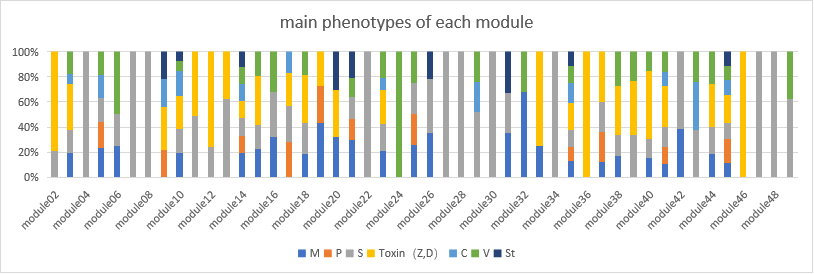
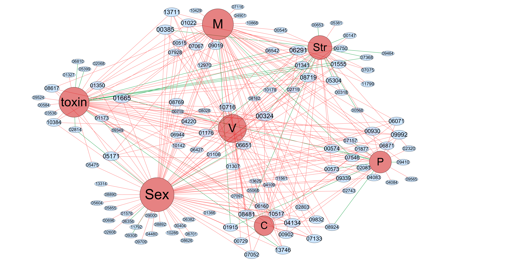

In our case, we made statistics of module's regulators, but different modules contain different regulators, and different regulators have their corresponding effects on phenotypes. We need to use mathematical statistics to reasonably guess the phenotypes that each module affects, thus establishing the relationship with strong support between the module and the phenotypes.
Phenotypic function annotation of module networks Click on the mouse to zoom in
Eight phenotypes M:Mycelial growth; P:Pigmentation;
S:Sexual development; Z:ZEA production;
D: DON production;C:Conidiation;
V:Virulence; St:Stress responses;
1.The regulators and corresponding phenotypes is the initial data and the data are arranged into the text of nodes and edges, nodes include 8 phenotype and 117 regulators(count all modules containing the regulation tree, a total of 48 modules and a total of 117 different regulators),and edges represent the connections between the two nodes, meaning that the regulator affects the kind of phenotype that are connected. Then input into Cytoscape to draw the network. After the corresponding connection diagram is obtained, the Regulator-Phenotype network diagram is obtained after using the software plug-in for proper clustering(ClusterViz in Cytosacape) and proper adjustment. In the network, the red line represents the positive effect of the regulator on the corresponding phenotype, while the green represents the negative effect.
2.In order to establish the relationship between modules and phenotypes, we adopt a certain mathematical statistical model to describe the phenotypic functions of each module. The specific results and models are shown in the figure.